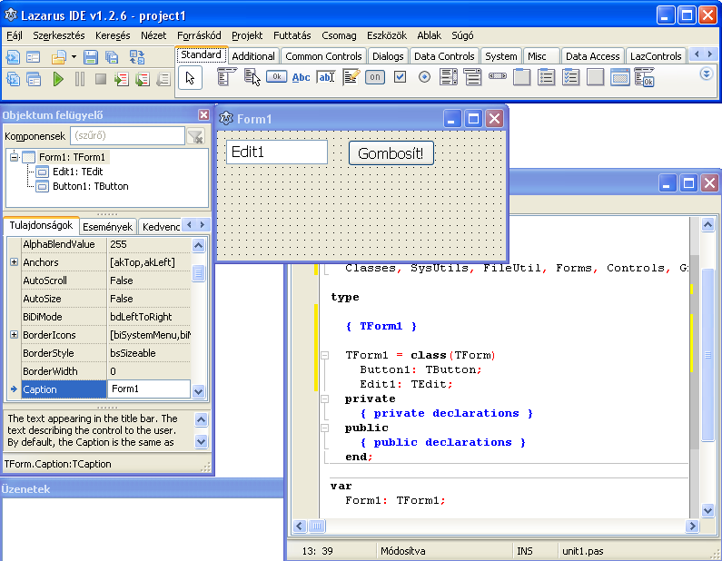

18. fejezet: Objektumok létrehozása
A feladat
Készítsünk egy programot, amely egy beadott egész szám minden számjegyéhez létrehoz egy gombot! Mivel nem tudjuk előre, hány számjegyünk lesz, nem gyárthatjuk le tervezési időben a gombokat. A gombok futási időben jönnek létre, ezért a tervezőt nem használhatjuk a gombok tulajdonságainak beállítására, ezt is futási időben kell megtenni. Legyen egy gomb mérete 32×32 pixel, a gombok közötti távolság 10 pixel.
Előkészítés
Kezdetben legyen a formon egy szövegdoboz (Edit1, ide írjuk be a számot), és egy indítógomb (Button1).

A gombra dupla kattintással hozd létre az eseménykezelő üres vázát, a kód többi részét majd ebbe fogjuk írni.
A gombok létrehozása
Az eseménykezelőben szükségünk lesz egy i változóra, amely végigmegy Edit1 karakterein. Ezenkívül deklarálnunk kell egy TButton típusú objektumot (valójában osztályt!) is, amely az éppen létrehozott gombra hivatkozik. Ezután minden karakterhez (melyek számjegyek) létrehozunk egy gombot:
procedure TForm1.Button1Click(Sender: TObject);
var i:integer;
g:TButton;
begin
for i:=1 to length(Edit1.Caption) do begin
g:=TButton.Create(Form1);
g.Parent:=Form1;
g.Height:=32;
g.Width:=32;
g.Top:=50;
g.Left:=i*10+(i-1)*32;
g.Caption:=Edit1.Caption[i];
g.Font.Size:=18;
end;
end;
Először létrehozzuk az adott gombot, majd beállítjuk a tulajdonságait.
Mint látható, a TButton konstruktorának van egy paramétere. Ezt onnan tudhatjuk, hogy a Create begépelésekor megvárjuk (vagy CTRL+szóköz lenyomásával előhívjuk) a szerkesztő súgóját, mely kiegészíti a begépelt azonosítót, és itt a listában láthatjuk a Create paraméterét. Mivel ennyi azonosítót nem tudunk megjegyezni, ez a súgó nagyon hasznos segédeszköz, főként, hogy az azonosítók nevéből azok feladata is sokszor kitalálható.
A konstruktor paramétere azt adja meg, hogy melyik másik objektum a tulajdonosa a gombnak. Ez azért fontos, mert a form bezárásakor a Lazarusnak nem csak a formot, hanem az általa birtokolt objektumokat is meg kell semmisíteni, és ezt a tulajdonosi adatok alapján végzi el.
A másik új tulajdonság a Parent: ez grafikus objektumoknál azt jelzi, hogy az adott objektum melyik másik objektum belsejében jelenik meg (továbbá a Top, Left értékek is a Parent bal felső sarkához képest értendők).
A Left értékét a gomb sorszámából, a gombok szélessége és a térközök alapján állapítottuk meg.
Eseménykezelők és típuskényszerítés
Bonyolítsuk a feladatot! Egy újonnan létrehozott gomb megnyomásakor a rajta lévő számjegy értéke nőjön 1-gyel (a 9-ből meg legyen 0). Ehhez a gombok eseménykezelőjét is be kell állítani, most már a szerkesztő segítsége nélkül.
Figyeld meg a Button1 eseménykezelőjét! Ennek mintájára el kell készítenünk egy saját eseménykezelőt, de az összes új gomb eseménykezelője lehet ugyanaz az eljárás (hiszen mindegyik gomb esetén ugyanazt csinálja).
Honnan fogja tudni az eseménykezelő, melyik gomb megnyomása váltotta ki az eseményt? Ezt a célt szolgálja a Sender paraméter, mely tartalmazza az eseményt kiváltó objektum címét.
Legegyszerűbb, ha az új eseménykezelő fejlécét a meglévő másolásával hozod létre.
Először a form osztályát egészítjük ki az új metódus fejlécével:
TForm1 = class(TForm)
Button1: TButton;
Edit1: TEdit;
procedure Button1Click(Sender: TObject);
procedure SajatClick(Sender:TObject);
Majd megírjuk az eljárást:
procedure TForm1.SajatClick(Sender:TObject); var g:TButton; begin g:=TButton(Sender); g.Caption:=IntToStr((StrToInt(g.Caption)+1) mod 10); end;
Az egyszerűség kedvéért deklaráltunk egy g változót, mely az adott gombra mutat.
Logikusan g:=Sender lenne az utasítás, de ez fordításkor hibaüzenetet ad. Ennek az az oka, hogy a Sender típusa általános TObject, míg g típusa TButton. Ezért a típuskényszerítés (typecast) műveletével meg kell adnunk, hogy a Sender-ben tárolt értéket tekintse úgy, mint egy TButton típusú mutató. A típuskényszerítés általános formája:
típus(kifejezés)
Ekkor a Pascal a kifejezés eredeti típusától függetlenül azt a megadott típusúnak tekinti. Ez többnyire csak akkor működhet, hogyha a kifejezés által lefoglalt memóriaméret megegyezik az új típus által igényelttel. Például a
writeln(byte('a'));
utasítás 97-et ír ki, ugyanis az 'a' karakter tároláskor a memóriában egy bájtot foglal, melynek értéke 97 (az 'a' ASCII-kódja).
A számjegy léptetése oda-vissza alakít szám és szöveg között, a 9-ről 0-ra ugrást pedig feltétel helyett a tízes maradék képzésével oldja meg.
Ha elindítod a programot, semmi nem fog történni a gombok nyomogatásakor. Ennek az az oka, hogy a létrehozott gombok OnClick tulajdonságára még nem állítottuk be az eseménykezelő eljárásunkat. Egészítsd ki a gomb tulajdonságainak beállítását a következő sorral:
g.Font.Size:=18; g.OnClick:=@SajatClick;
Egy objektum OnClick tulajdonsága valójában egy mutató, mely az eseménykezelő eljárás memóriacímét kell, hogy tartalmazza. A @ művelet megadja egy azonosító (esetünkben az eseménykezelő eljárás) memóriacímét.
A forráskódot itt letöltheted.
Értékelés
Nincs tökéletes program, ez erre a példaprogramra különösen igaz. Érdemes elemezni a fejlesztési lehetőségeket.
Hibalehetőség, hogy "gombosításkor" nem vizsgáltuk a beírt szöveg karaktereit. Ha ezek nem számjegyek, az StrToInt függvény hibaüzenetet ad futáskor.
Ha még egyszer megnyomjuk a gombot, a korábban létrehozott számjegyes gombok megmaradnak, és továbbiak készülnek. Új gombok létrehozásakor a régieket meg kellene szüntetni. Azonban a már létrehozott gombokhoz nem tudunk hozzáférni, mert a g változó mindig csak az éppen létrehozott objektumot mutatja. Ezeket a mutatókat el kellett volna tárolnunk.